Precourse - Rhino
Nurbs Geometrical spline that defines surfaces Advantages
- when you want to edit it is really easy to change shapes
Commands Rhino Working file 1
- Right for rotating
- Left for selecting
- Shift+ Right pan
- Cntrl+ Right zoom
- Alt + Right Zoom
- Shift+alt+right Tilt
If you make want a make a line in vertical
- Command line / press control while click again in the initial point/ now your line is in the Z axis
3d curve by pressing control and clik for control point
-
CONTROL+SHIFT+LEF Select FACE
-
Change the line of dots/dash lines _ setlinetypescale
and change the values until you see it nicely
SEAPLANE = working table
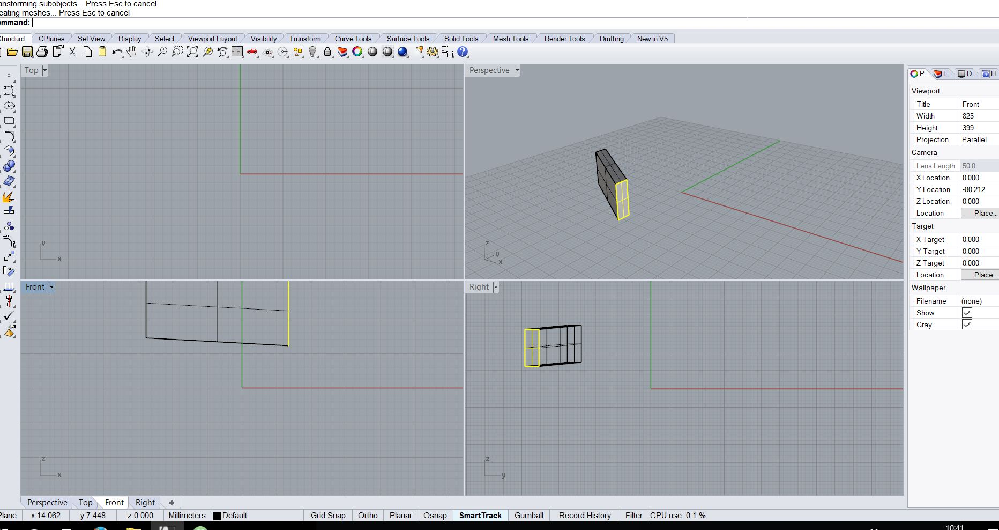
Double click on the viewport type(perspective,top,etc)To full screen it.double click again to return to 4 views
Tools/options all configuration of Rhino
Lens recommendation ( right panel)
- 50mm
- 35mm
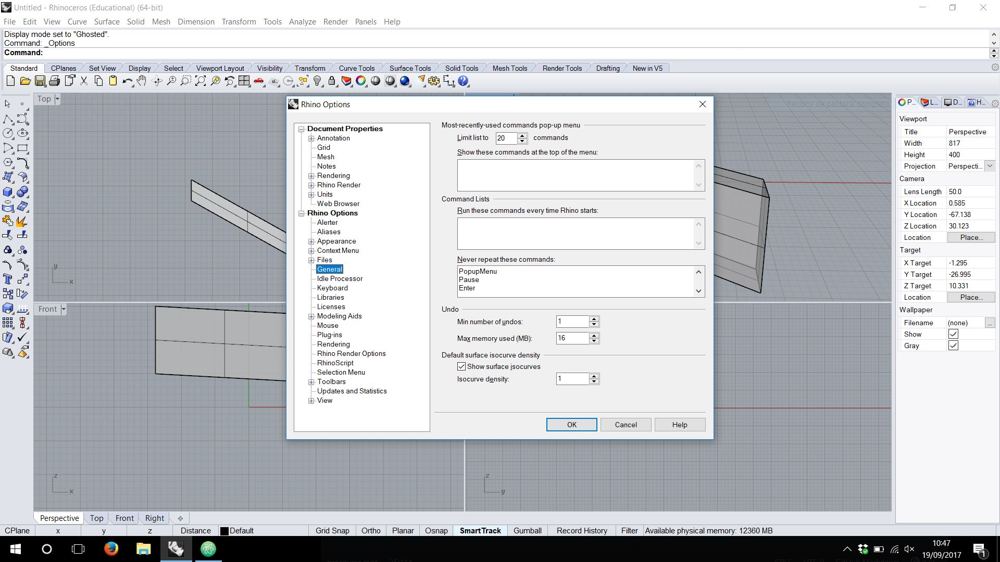
Filter
To allow you select only what it is active
Gumball
Scale/Rotate/Move Double click on it to allow you to introduce units
- +Shift it will do it proportional
Click on the white cirle with left click to relocate gumball and put the new axis.
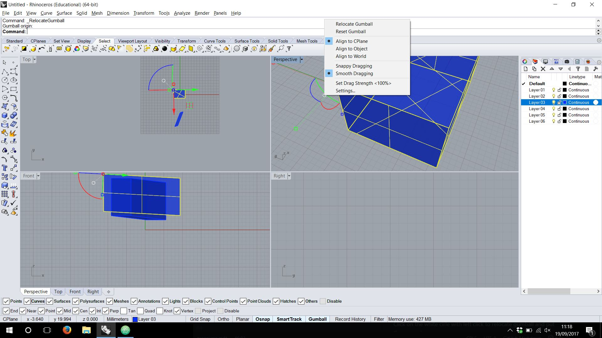
Press Cntrl after moving to create a surface from curves
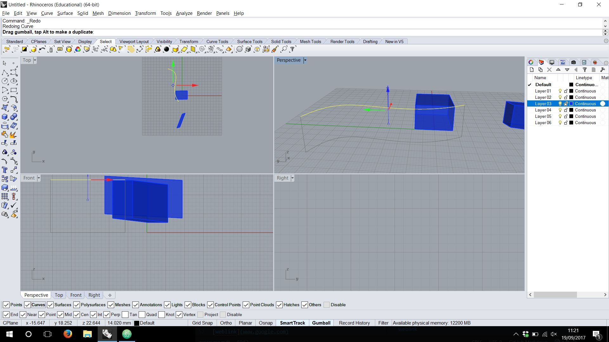
if you want to toggle the control points of a curve you can use CONTROL POINTS by activating F10-F11
Rebuild
Will allow to add control points. When the context menu appear you got points and degree. Points= for number of control points Degree= for angled or curved, the same as curved.
Will work for curves, surfaces, lines, etc
_InsertControlPoint for new lines of control(increment the lines in some areas, you should turn off f10-f11)
SolidPtOn
To edit the control point of a solid object without exploding If you use explode you can finish with an open objet.
Cagedit
Boundy box for make a point of cage to deform solid objects
Surface Tools Rhino Working file 2
You can check the normal of the surfaces
Command _dir
Making the surface clockwise is the opposite as counterclockwise, one will be backside up.
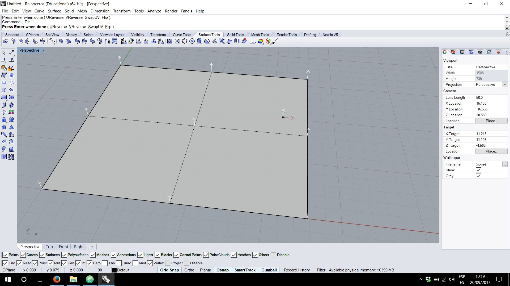
Closed Surfaces
The only closed surfaces(naturally) are the sphere and the torus as the controlpoints/corners are supperposed above themselves.
Trimed Surfaces
If you trim a surface the control points of the biggest surface keep steading there.
If you want to shrink the point to adapt to your new surface you should apply the _SHRINK COMMAND (righ image)
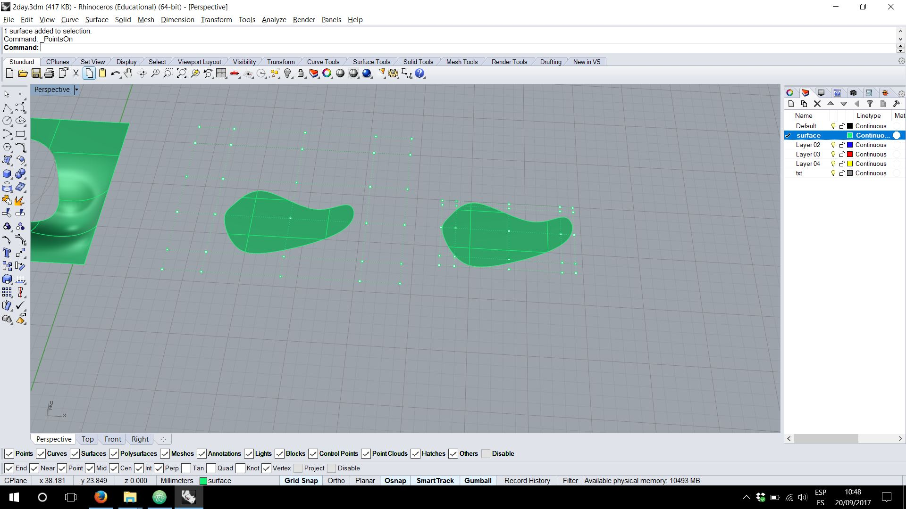
3-4 Points Surfaces
It is not the same a:
- surface made with 4 control points (left)
- surface made with 4 control point (center) the initial is the same as the final
- surface with 3 control points ( right) the 4 point it is a ghost.
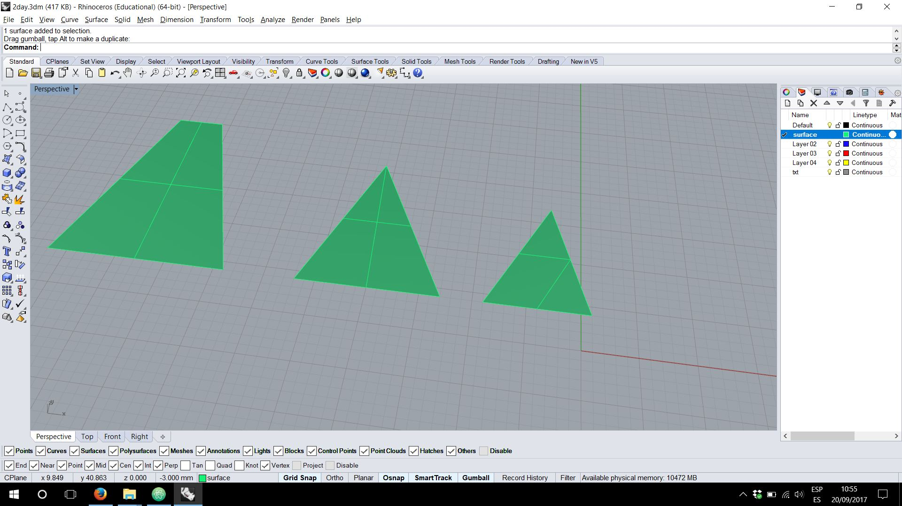
Surface that is turned back you can “flip” it COMMAND
Duplicate borders
To extract the permiter from a surface _DupBorder
Surface from curves
You create for example 3 close curves Intersect them with some planes and select everything for _intersect 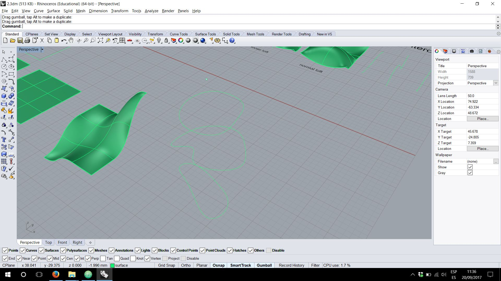 Erase the planes and you can see the points in the intersection
Now you can join the point with some curves
Curve - Interpolate points(inside curve)
And create the surface with surface/ create surface from network of curves.

Surface from borders,etc
Patch command
Stiffness
- lower numbers make it more loose
- if it is to stiff it could not adapt to the corners,lines,curves,etc
Automatic Trim will show you the whole original trimed surface in case you have it
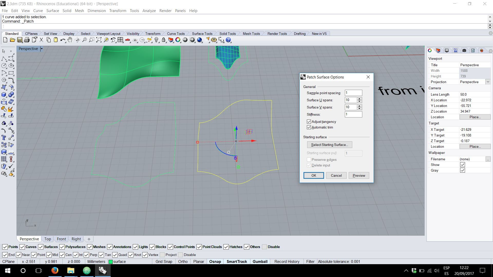
Adjust tangency when you want to fill the hole or trimed part with a surface that it is in another surface
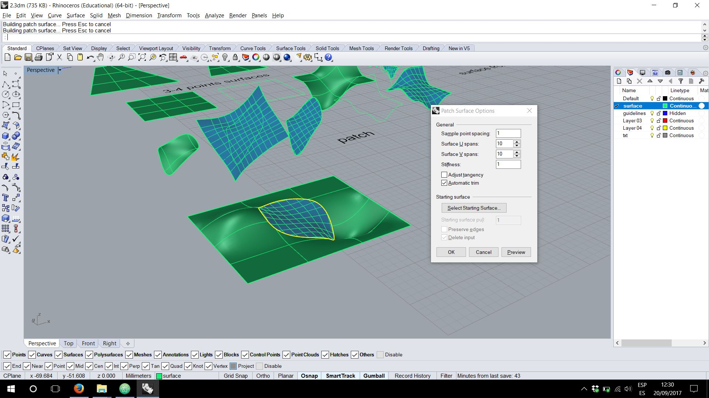
Sweep
Drag seam point means where to start 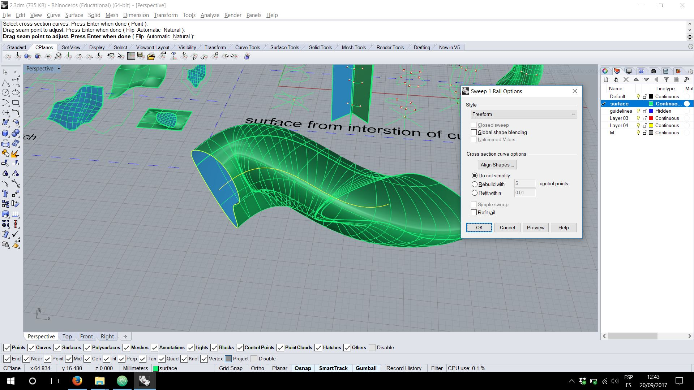
You need a main guiding line and a profile to follow that lines You can move the CPLANE to the curve to create a profile perpendicular to the guiding line.
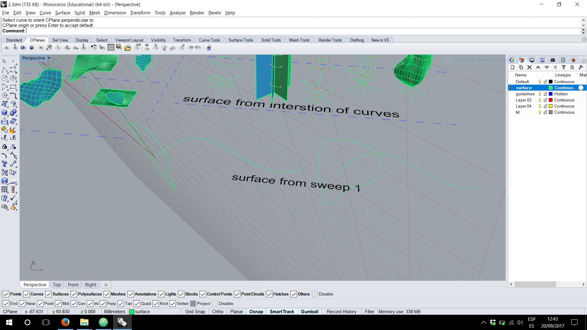
Sweep2
- Make two rails
- Make line profiles or curves, if you use lines rebuild them and modify them.
- do Sweep2
Revolve
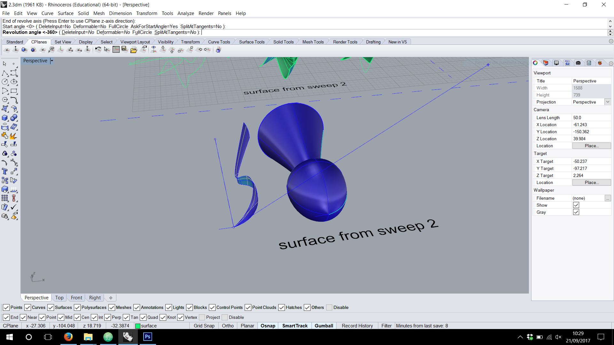
Zebra analysis
Zebra Command it is just an analysis tools for helping with the viewing
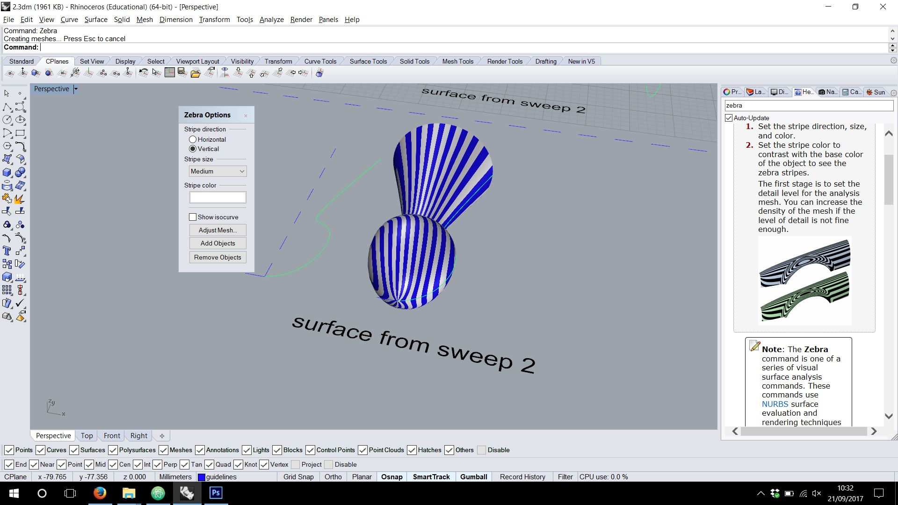
Divide command
divide to help you ´cut´a circle for example to stablish some dots on it in equally distance.
Height field map Rhino Working file 3
PICTURE FRAME allows you to introduce a picture in rhino
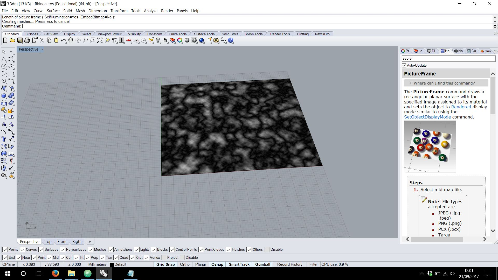 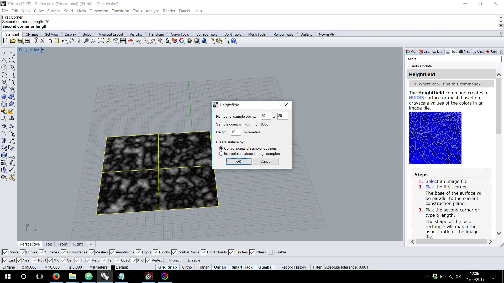 Heightfield allows you to make the height field
Contour–plane Giving diferent values or directions on the axis and the space between the ´cuts´you can make the sections or profiles.
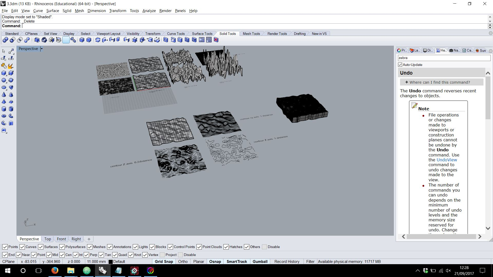
Drape
Make some shapes/ set you up in top view / Drape / make the window
BOOLEAN OPERATIONS Rhino Working file 4
Cap For closing open surfaces / open lofts
SOLID TRANSFORMS Rhino Working file 5
Twist Towers example Rhino real example
MESH Rhino Working file 6
Meshes have also control points but cannot be Rebuild
We can transform a polysurface into a mesh with ´Mesh´ command, adjusting the polygon density.
You can join a mesh even if the meshes are not touching.
Flatten files for machines
PROJECT TO C PLANE command
Erase duplicates lines
SELDUP
Measure total lenght of lines
lenght command
To check is the mes is okey for 3d printing
MESREPAIR command